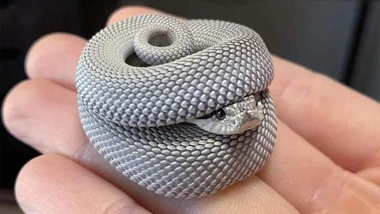

Kačji miti
Človekov strah pred kačami temelji na izkušnjah z redkimi vrstami, ki uporabljajo strup tudi za samoobrambo. Takih je približno 725 vrst po vsem svetu, od tega jih ima 250 tako močan strup da lahko ubijejo človeka z enim ugrizom. Dokumentirani primeri smrti zaradi kačjih ugrizov so tako redki, večinoma povzročijo le bolečo rano. V splošnem pa se kače raje umaknejo nevarnosti in se odzovejo agresivno le kadar nimajo izhoda
O kačah je veliko mitov tet pravljih a še v nobenemu niso bile kače predstavljene kot dobre, zmeraj sodijo v skupimo zlobnežev. to je verjetno razlog da se večina vsega prebivalstva na smrt boji kač vseh vrst.

Lokacija Tropske hiše Celje
Divje kače lahko v Sloveniji viditi v povsod (po celotni Sloveniji), če pa želite videti udomačene ali vsaj zaprte pa obiščite živalski vrt, ali pa prečudovito Tropsko hišo v Celju.
Napiši svoje mnenje o Tropski Hiši Celje